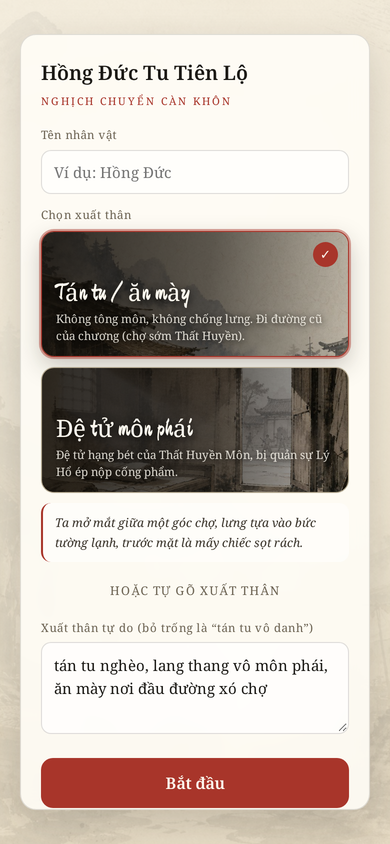

Báo cáo: giao diện chọn xuất thân
Hướng C · chụp từ bản đang chạy trên GitHub Pages, khổ iPhone 390×844
| Đã làm | Nền màn hình đổi ảnh theo xuất thân đang chọn + hiện câu mở đầu thật |
| Đụng vào game | Không. Chỉ HTML/CSS/JS của màn chọn |
| Chỉ số khởi đầu | Giữ nguyên (2 xuất thân vẫn giống hệt nhau) |
| Test | 28 điểm giao diện · engine 105/105 · API 161/161 |
1. Chưa chọn gì
Nền trơn, chưa có trích đoạn.

2. Chọn Tán tu / ăn mày
Cả nền đổi sang ảnh góc chợ sớm, hiện câu mở đầu: “Ta mở mắt giữa một góc chợ, lưng tựa vào bức tường lạnh…”

3. Chọn Đệ tử môn phái
Nền đổi sang tân xá buổi sáng, câu mở đầu đổi theo: “Ta choàng tỉnh trên một tấm phản gỗ cứng…”

Đo được gì
- So 2 ảnh chụp tán tu vs môn phái: 78% điểm ảnh vùng mép trái đổi màu → nền đổi thật.
- Trước khi chọn:
nenHien=false, trích đoạn rỗng. Sau khi chọn:opacity=0.42. - Bỏ chọn thẻ: nền tắt, trích đoạn rỗng.
- Không lỗi JS trên bản live.
Còn chưa làm
Hai xuất thân vẫn cho chỉ số khởi đầu y hệt nhau (30 sinh lực · 12 tu vi · 3 bạc), chỉ đoạn mở đầu khác. Vì vậy thẻ không hiện chỉ số riêng — hiện số là bịa. Muốn khác nhau thì phải sửa dữ liệu + engine, việc đó cần bạn cho phép.